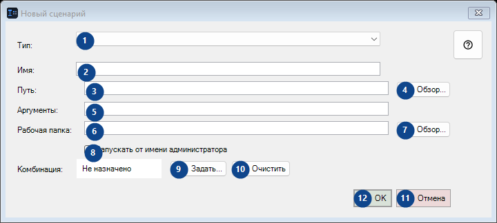
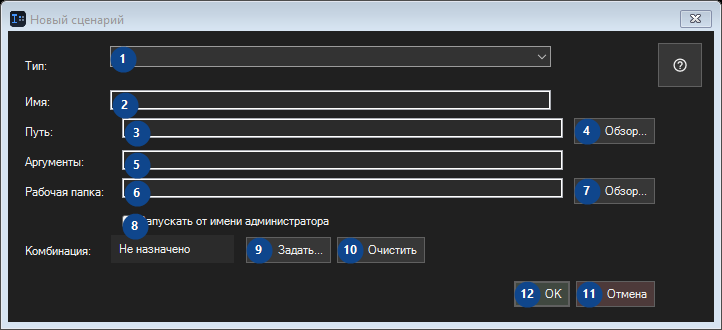

Новый сценарий
Для чего это окно
Запускайте свои программы, скрипты и загрузки yt-dlp из трея, этой таблицы, по комбинации или с панели задач.


Порядок действий
Прочитайте пояснения к номерам, выберите нужные значения и продолжите командой окна.
Элементы
1. Тип:
Выберите или введите значение для соседней подписи. Проверьте его перед продолжением.
Ваши сочетания клавиш2. Тип:
Выберите или введите значение для соседней подписи. Проверьте его перед продолжением.
Ваши сочетания клавиш3. Путь:
Выберите или введите значение для соседней подписи. Проверьте его перед продолжением.
Ваши сочетания клавиш4. Обзор...
Используйте команду, когда нужно указанное действие. Прочитайте запрос подтверждения перед согласием.
Ваши сочетания клавиш5. Путь:
Выберите или введите значение для соседней подписи. Проверьте его перед продолжением.
Ваши сочетания клавиш6. Путь:
Выберите или введите значение для соседней подписи. Проверьте его перед продолжением.
Ваши сочетания клавиш7. Обзор...
Используйте команду, когда нужно указанное действие. Прочитайте запрос подтверждения перед согласием.
Ваши сочетания клавиш8. Запускать от имени администратора
Используйте команду, когда нужно указанное действие. Прочитайте запрос подтверждения перед согласием.
Ваши сочетания клавиш9. Задать...
Используйте команду, когда нужно указанное действие. Прочитайте запрос подтверждения перед согласием.
Ваши сочетания клавиш10. Очистить
Используйте команду, когда нужно указанное действие. Прочитайте запрос подтверждения перед согласием.
Ваши сочетания клавиш11. Отмена
Используйте команду, когда нужно указанное действие. Прочитайте запрос подтверждения перед согласием.
Ваши сочетания клавиш12. OK
Используйте команду, когда нужно указанное действие. Прочитайте запрос подтверждения перед согласием.
Ваши сочетания клавиш